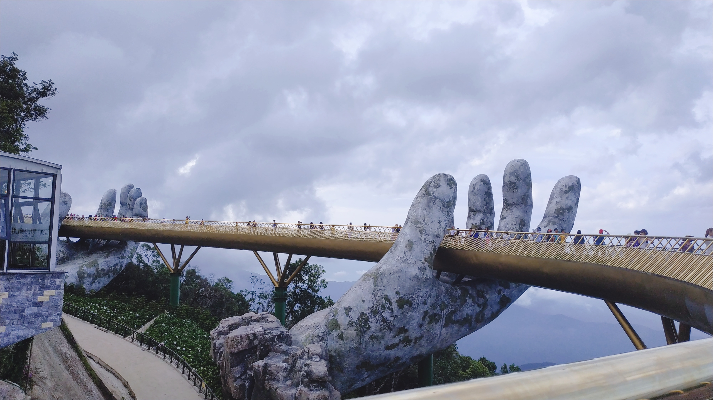

- html
- CSS
- javascript
- 그냥 암거나 써도 되나?
- 여기는 3페이지입니다
- 나는 suuunmi
- 진짜 오늘 아침은 ㅂㄷㅂㄷ
여기는3페이지 입니다아
코딩 공부 열심히 할겨 생활코딩으로 공부해서 코딩 잘할거야
(로스앤젤레스=연합뉴스) 옥철 특파원 = 미국 독립기념일인 지난 4일(이하 현지시간) 규모 6.4의 강진이 강타한 미 캘리포니아주 남부 컨카운티 리지크레스트 인근에서 5일 새벽 규모 5.4의 여진이 발생했다고 미 지질조사국(USGS)이 밝혔다.
USGS와 현지 매체들에 따르면 미 서부시간으로 이날 새벽 4시 7분 리지크레스트 인근 셜즈밸리 서쪽 16㎞ 지점에서 규모 5.4의 지진이 발생했다.
전날 오전 10시 33분 셜즈밸리에서 규모 6.4의 강진이 발생한 이후 측정된 여진 가운데 가장 강했다.
진원의 깊이는 약 7㎞로 전날 본진(8.7㎞)과 비슷하게 얕은 편이었다.
일반적으로 진원이 얕으면 지표면에 전달되는 지진의 위력이 커진다.

이미지 넣을 때는 src랑 width 순서 바꿔도 상관 없다고 한다.